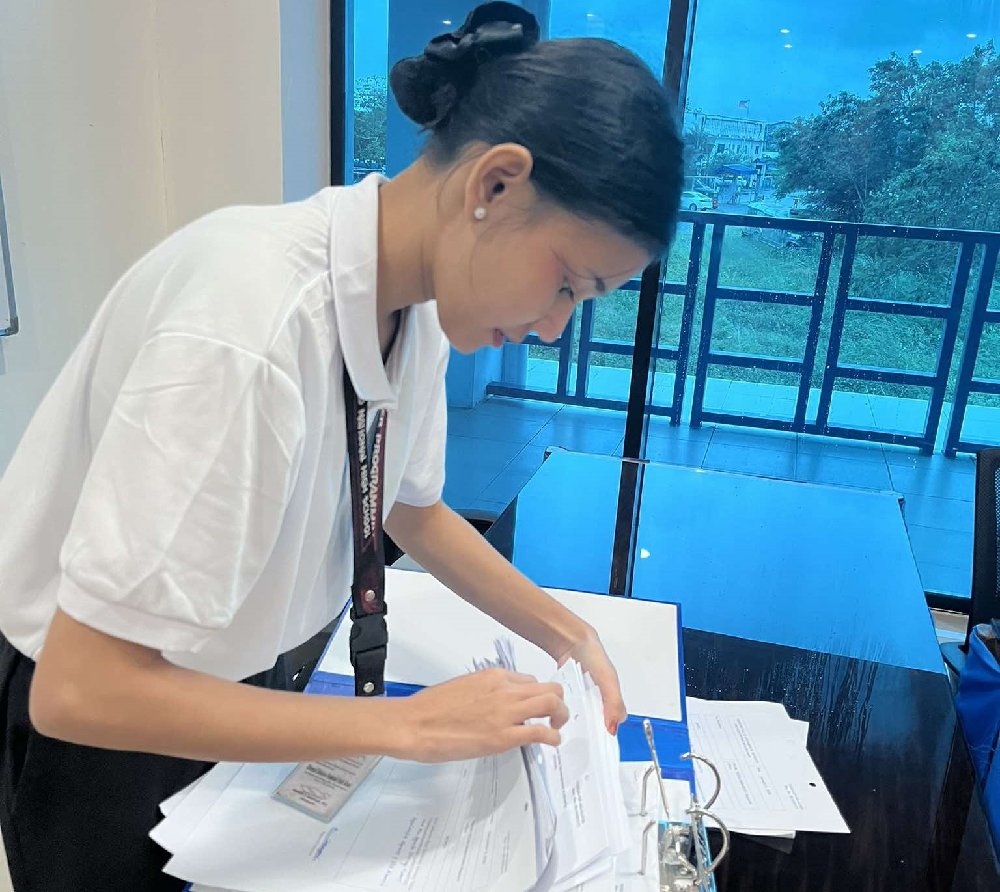
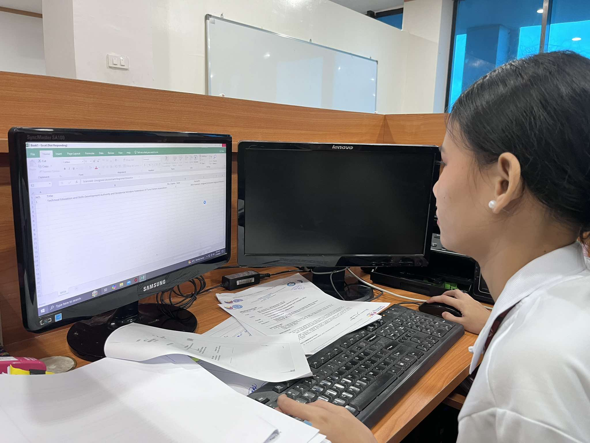
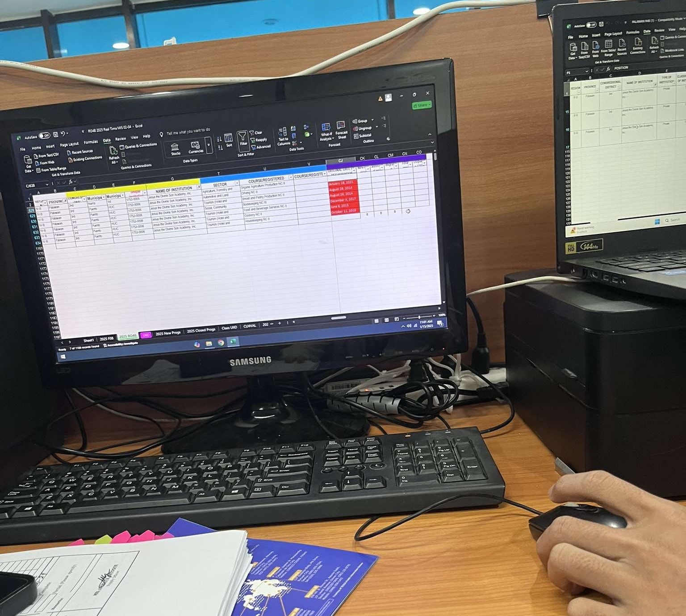
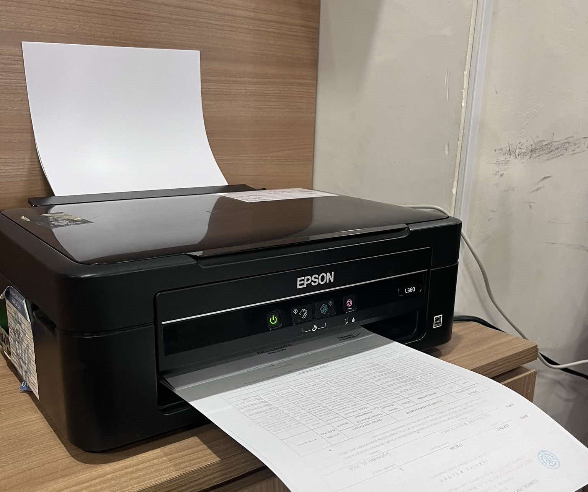
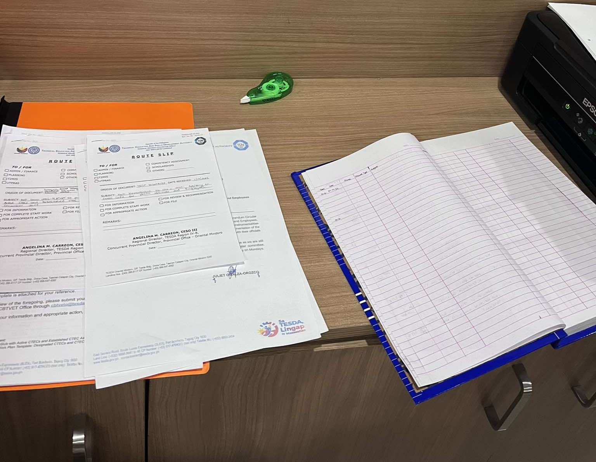
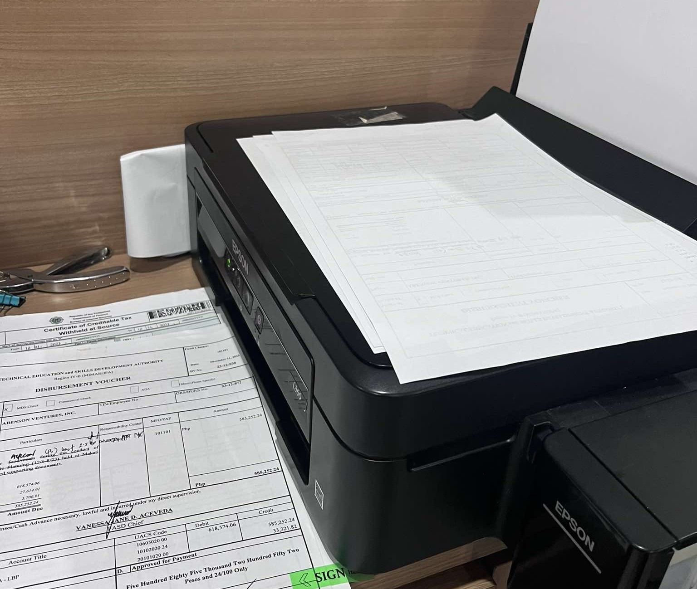
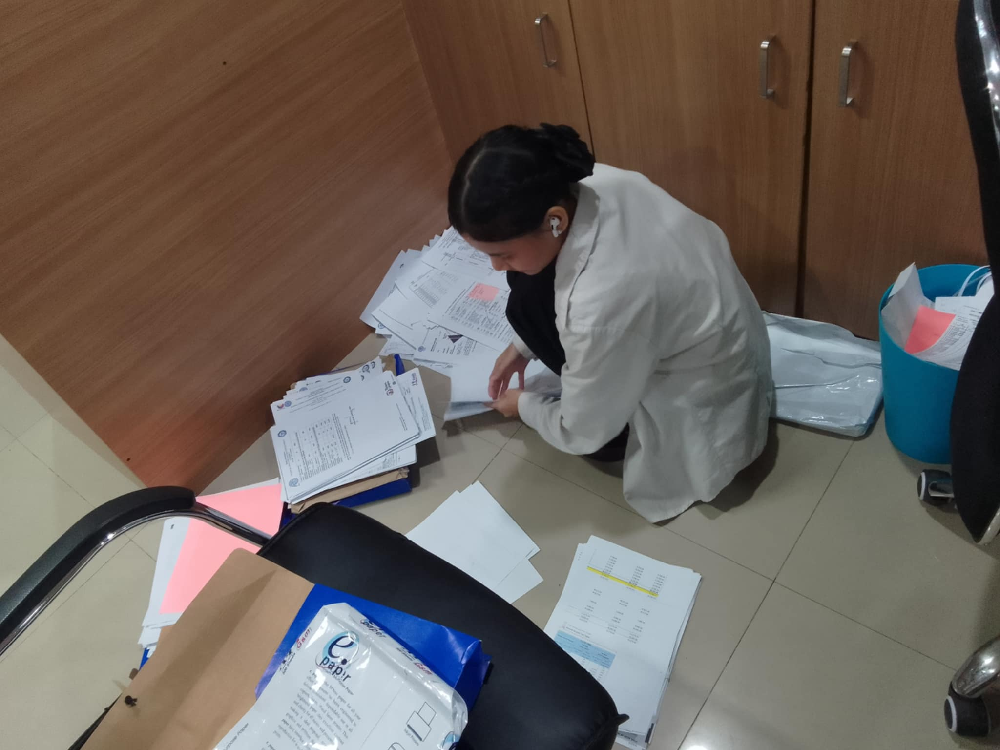
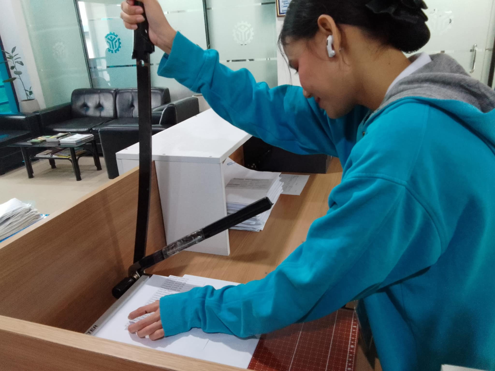
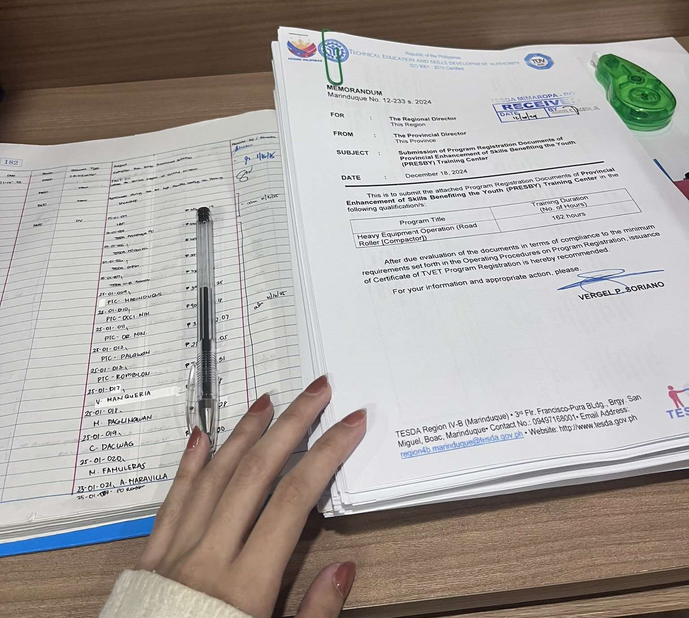
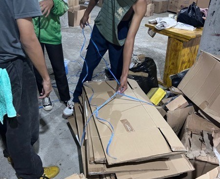

×

During my work immersion from January 13 to January 17, I was assigned various tasks related to document processing, organization, and facilitation to support the efficient operations of the office. My responsibilities included encoding, scanning, organizing, and ensuring the proper receipt and signing of important documents. Additionally, I assisted in coordinating with personnel to facilitate approvals and maintain accurate records. Furthermore, I assisted in handling official documents for the Register of Deeds (ROD) and the Provincial Office (P.O.), ensuring that all paperwork was properly processed and documented.





From January 20 to January 24, a series of clerical and administrative tasks were conducted to facilitate the
efficient processing, organization, and documentation of important records.
Key responsibilities included securing signatures from the Register of Deeds (ROD),
receiving and delivering documents at the P.O. Or. Min., and systematically organizing files for better accessibility.
Additional tasks involved scanning documents, cutting bond papers into A4 size, and preparing document stabs
and record books to ensure proper labeling and tracking.




